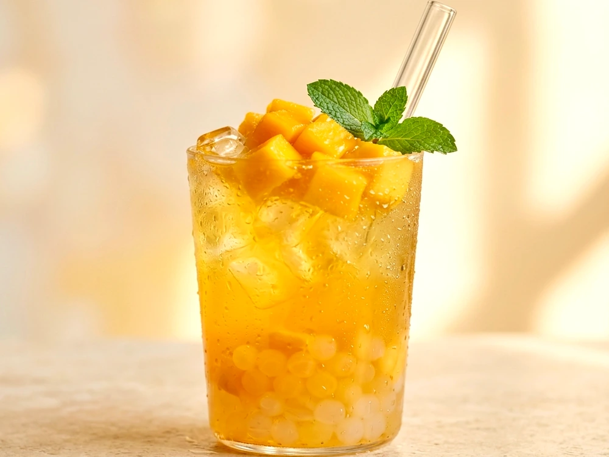
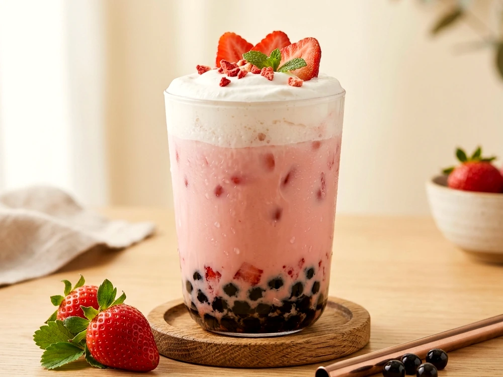

Tea Mastery
Tea Mastery
5 MIN READ · UJI MATCH
Matcha 101: Ceremonial Grade vs. Culinary Powders
Not all green powder is created equal. Learn why shade-grown first-harvest Tencha leaves produce vibrant emerald color and sweet vegetal notes without bitter astringency.

Drink Guides
3 MIN READ · SWEETNESS
Finding Your Sweet Spot: 0% to 100% Decoded
Tired of drinks that are either cloyingly sugary or bland? Discover how our natural cane and golden honey syrups pair with specific tea bases for ideal flavor equilibrium.
 Brewing Craft
Brewing Craft
4 MIN READ · SOURCING
From Pasture to Cup: Grass-Fed Dairy & Barista Oat
Why temperature-regulated, non-homogenized whole milk and steamed Swedish oat milk create the silky mouthfeel that powdered creamers can never replicate.
 Boba Culture
Boba Culture
6 MIN READ · HERITAGE
The Taichung Origin Story: How Boba Won the World
Travel back to the humid night markets of 1980s Taiwan, where a serendipitous drop of tapioca dessert pudding into iced Assam black tea sparked a global revolution.
4 MIN READ · FOOD SCIENCE
Molecular Gastronomy: The Science Behind Popping Boba
Sodium alginate, calcium lactate, and real passionfruit pulp: how culinary sphere-encapsulation creates that joyous, flavorful pop in your favorite fruit tea.

Drink Guides
5 MIN READ · BREW MATH
Temperature & Time: The Golden Steeping Chart
Why brewing Jasmine Green at 175°F protects subtle floral aroma, while Ceylon Black demands 205°F for bold backbone. Master our barista brewing chart at home.